メーカーから見る
メーカー一覧
公式サイトを確定し成分データを取得できたメーカーを、収録商品数で並べています （これは「おすすめ順」ではなく、当サイトが何社・何商品を集めたかという網羅の事実です）。 各社のページで、その社の商品を乾物量換算のファクトとして一覧できます。
「リン開示」はそのメーカーの商品のうち、公式にリンの数値を表示している割合です。
開示率の高低はメーカーの方針差であり、品質の良し悪しを示すものではありません。
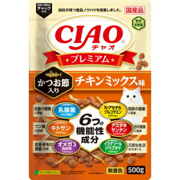
いなばペットフード株式会社
リン開示 3%療法食 4
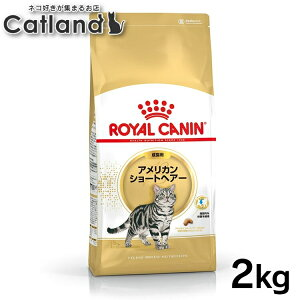
ロイヤルカナンジャポン合同会社
リン開示 56%療法食 103
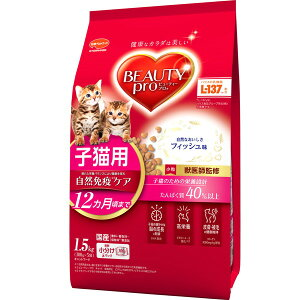
日本ペットフード株式会社
リン開示 94%療法食 19
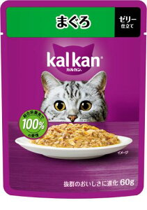
マース・ジャパン・リミテッド
リン開示 4%公式未確認
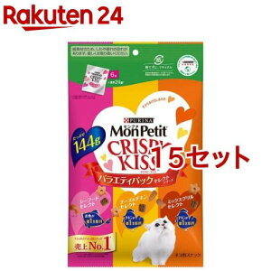
ネスレ日本株式会社 ネスレピュリナペットケア
リン開示 27%療法食 11公式未確認
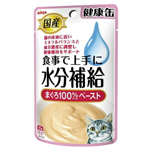
アイシア株式会社
リン開示 54%
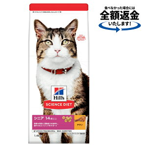
日本ヒルズ・コルゲート株式会社
リン開示 30%公式未確認
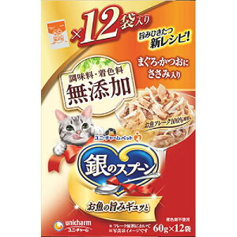
ユニ・チャーム株式会社
リン開示 0%公式未確認
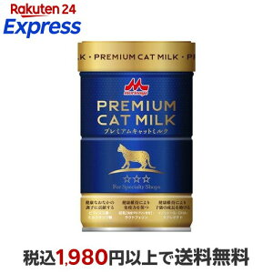
株式会社森乳サンワールド
リン開示 0%療法食 15
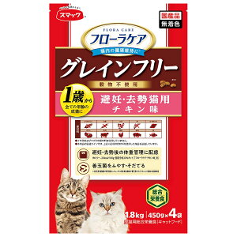
株式会社スマック
リン開示 54%
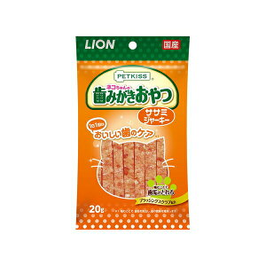
ライオンペット株式会社
リン開示 0%公式未確認
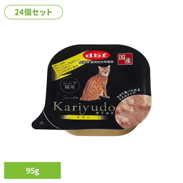
デビフペット株式会社
リン開示 90%公式未確認
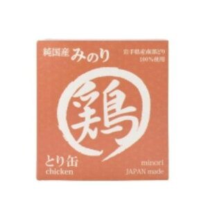
株式会社サンユー研究所
リン開示 0%
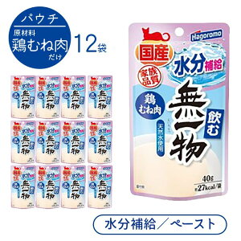
はごろもフーズ株式会社
リン開示 38%公式未確認
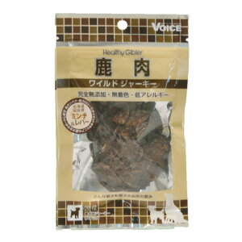
ヴォイス株式会社
リン開示 20%療法食 2
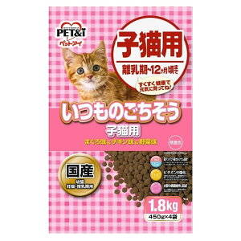
ペットアイ株式会社
リン開示 100%
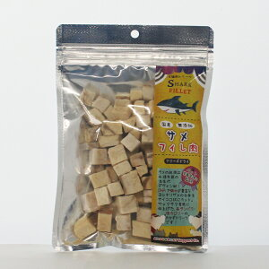
株式会社ジャパンペットニュートリション
リン開示 0%
株式会社パーパス
リン開示 0%
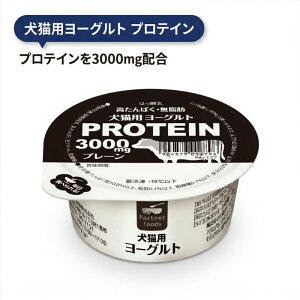
ペットライブラリー株式会社
リン開示 0%
天然素材株式会社
リン開示 100%療法食 1
株式会社ビルバックジャパン
リン開示 0%
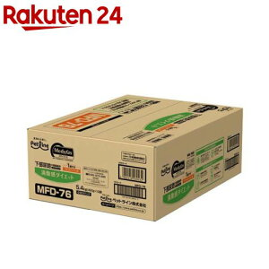
ペットライン株式会社
リン開示 100%
マルトモ株式会社
リン開示 0%
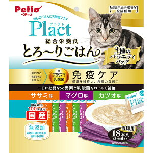
株式会社ペティオ
リン開示 100%公式未確認